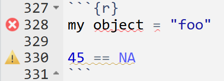

2 R basics & functions
In this session you should learn:
2.1 I come from Python, how will I adapt to R?
Some results from the survey last week:
{kind=link}
{kind=link}

The very good thing is that if you come from a Python or any other interpreted language, adapting to R should not be that hard. Code syntax is of course different. For instance, Python indexes from 0 and R from 1. Unfold the note below for cheatsheet, based on Watson (n.d.) of the main peculiarities.

# Packages
library(dplyr)
# Strings
paste('Hello', 'World')
paste(c('Hello', 'World'), collapse = '')
# Booleans
TRUE && FALSE == FALSE
FALSE || TRUE == TRUE
!TRUE == FALSE
# Loops
for (i in 1:10) {
print(i)
}
while (x > 0) {
x = x - 1
}
# Conditionals
if (x > 0) {
print('x is positive')
} else if (x == 0) {
print('x is zero')
} else {
print('x is negative')
}
ifelse(x>0, 1, -1)
# Functions
f = function(x,y) {
x2 = x * x
x2 + sqrt(y*x2+1)
}
{\(x) x^2 + sqrt(y*x^2+1)}()
# Lists
myList = list(1, 2, "a", c(10,8,9))
myList[3] == "a"
myList[[4]][2] == 8
myList[length(myList)] # returns list(10,8,9)
2 %in% myList
# Ranges
seq(0, 2*pi, by = 0.1)
seq(0, 2*pi, length = 100)
0:5 == c(0, 1, 2, 3, 4, 5)
# Vectors and Matrices
A = matrix(c(1,3,2,4),nrow=2) # column-wise!
b = c(1,2)
t(A)
dim(A)
solve(A,b)
b > 0 # elementwise comparison
A^2 # elementwise product
A %*% A # matrix product
which(b > 0)
matrix(rep(2,100), nrow=10)
diag(4)
cbind(A,b)
rbind(A,b)
# Random numbers
set.seed(1234)
matrix(runif(100),nrow=10)
rnorm(10)
sample(10:99,1)
# Plot
plot(runif(100))
# Packages
import pandas as pd
# Strings
'Hello' + 'World'
','.join(['Hello', 'World'])
# Booleans
True and False == False
False or True == True
not True == False
# Loops
for i in range(1,11):
print(i)
while x > 0:
x -= 1
# Conditionals
if x > 0:
print('x is positive')
elif x == 0:
print('x is zero')
else:
print('x is negative')
1 if x > 0 else -1
# Functions
def f(x,y):
x2 = x * x
return x2 + (y*x2+1)**(1/2)
lambda x: x**2 + (y*x**2+1)**(1/2)
# Lists
myList = [1, 2, "a", [10,8,9]]
myList[2] == "a"
myList[3][2] == 9
myList[-1] == [10, 8, 9]
2 in myList
# Ranges
import numpy as np
np.arrange(0, 2*np.pi, step=0.1)
np.linespace(0, 2*np.pi, num=100)
list(range(5)) == [0,1,2,3,4]
# Vectors and Matrices
A = np.array([[1, 2], [3, 4]])
b = np.array([1, 2])
np.transpose(A) # or A.T
A.shape
np.linalg.solve(A, b)
b > 0 # elementwise comparison
b**2 # elementwise function application
A @ A # matrix product
np.where(b > 0)
np.full((10,10), 2)
np.eye(4) # 4 x 4 identity matrix
np.hstack((A,b[:,np.newaxis]))
np.vstack((A,b))
# Random numbers
np.random.seed(1234)
np.random.rand(10,10)
np.random.randn(10)
np.random.randint(10,100)
# Plot
import matplotlib.pyplot as plt
plt.plot(np.random.uniform(0, 1, 100))2.2 Base or “vanilla” R
On the note above you find several examples of code syntax for base or “vanilla” R. R has several coding syntax. Knowing the basics of base R allows you to write R code without having to depend on other packages. However, most data science workflows are facilitated by other coding syntaxes such as tidyverse and data.table. Later in this lesson, you will be solving a practical using base R (Practical 1). In coming lessons, we will include the tidyverse into our workflows.
Find some info on coding basics right here.
2.3 Basics and good practice
2.3.1 R objects
The fundamental building blocks of R programming are objects. They can be vectors, matrices, data frames, lists and even functions.
(my_vector = c(1, 2, 3, 4))[1] 1 2 3 4(my_matrix = matrix(1:9, nrow = 3, ncol = 3)) [,1] [,2] [,3]
[1,] 1 4 7
[2,] 2 5 8
[3,] 3 6 9(my_data_frame = data.frame(
name = c("Alice", "Bob"),
age = c(25, 30)
)) name age
1 Alice 25
2 Bob 30(my_list = list(name = "Alice", age = 25, scores = c(90, 85, 88)))$name
[1] "Alice"
$age
[1] 25
$scores
[1] 90 85 88(my_function = function(x) {
return(x * 2)
})function (x)
{
return(x * 2)
}2.3.2 Object naming
You can create objects in R by assigning a value to a string.
a = 5
a[1] 5Probably a is not the object name you will be using as this is not very explanatory.
There are certain rules to follow when naming objects in R:
- It should start with a letter
1 = 2
1_my_object = "foo"Error in parse(text = input): <text>:2:2: unexpected input
1: 1 = 2
2: 1_
^- It can only contain letters, numbers,
_, and.
pa$$word = 1234Error in parse(text = input): <text>:1:4: unexpected '$'
1: pa$$
^Once you have followed these rules, you probably want your object names to be descriptive. There are different styles for naming.
If you are unfamiliar, I recommend:
- using long names that describe your object
- using snakecase (i.e.
_) to separate words - starting with a prefix for related objects (will help you when you use autocompletion)

roads_salzburg
roads_linz
roads_salzburg_clean_topology
roads_salzburg_routing2.3.4 RStudio diagnostics
A useful tool in RStudio is that it tells you when there is something wrong in a line of code. This will show as a red x or a warning sign on the left side of your code chunk, next to the line number, as well as a squiggly line under the potential conflict. You can hover over them to see what the issue is.
my object = "foo"
45 == NA
2.3.5 Saving R scripts or Quarto files
Since we did the important settings last class to never save our Environment or History, every time you open RStudio, you will start from a fresh session. That means you need to save your work. This will either happen in a script (.R) or Quarto file (.qmd). Here are some tips to name your saved files:
- Make your files machine readable
- Avoid spaces, symbols and special characters
- Don’t rely on case sensitivity to distinguish files (e.g.
MyScript.Randmyscript.Rmight be the same depending on your OS)
- Make your files human readable
- Be descriptive about what is in the file
- You can play with the names to influence ordering in your directory, e.g. with numbers or a prefix+numbers to classify certain parts of your workflow (e.g.
01_load_data.R,02_esda.R,03_model.R,report1_methods.qmd,report2_validation.qmd)
How do you make sure that your R script holds all the objects in your Environment?
- Save your R script (with hopefully all your work)
- Restart R (keyboard shortcut
Cmd/Ctrl + Shift + 0/F10) - Re-run the script (keyboard shortcut
Cmd/Ctrl + Shift + S)
For Quarto files, a simple solution is to Render your Quarto file. The file won’t render if it does not have all the information contained in it, and you will get an error.
2.4 R functions
2.4.1 Calling functions
Several built-in functions are available in base R, and are also the basis of any other library that you import into R.
function_name(argument1 = value1, argument2 = value2, ...)For instance, to generate random numbers we can use the function rnorm. To learn the rnorm arguments you can type ?rnorm in your R console
rnorm(n = 20, mean = 3, sd = 2) [1] 5.8871746 -0.3115327 2.6923773 2.7010547 1.6260361 -0.5191375
[7] 7.7052568 0.8791813 1.8959630 2.3856588 1.3027398 0.2950438
[13] -0.8316203 4.7478784 5.4339248 2.6881537 2.9805627 0.1065956
[19] 2.9557439 0.7026494It is not necessary to name the arguments, when you follow the intended function order. This is useful when you call functions often and already know what to expect. But be careful, this could be a source of errors.
rnorm(20, 3, 2) [1] 2.4328818 4.4032291 2.8942192 2.8912968 0.4861647 4.7438897
[7] 0.5454599 0.9973491 5.2968846 1.8234901 2.1481123 2.5649567
[13] 3.0545873 5.0106632 -0.1483170 2.4883695 3.2881135 6.7130980
[19] 1.1177695 2.3443668Some functions have default values for certain arguments. That means you don’t need to explicitely define each argument, but the function is coded with a default in mind. For rnorm, mean and sd have the defaults 0 and 1 respectively. So you can do:
rnorm(20) [1] -1.06380298 -0.92355397 -0.32677578 1.44268748 -1.18052981 -0.01331366
[7] -0.50760097 -0.47028223 -0.63940495 -0.48049965 0.13621599 -0.50808030
[13] -0.34769663 -0.26509305 -0.63237643 1.12147081 -0.03037257 1.55902404
[19] -0.50169815 0.10256380You can use autocompletion tools to help you find function names or the arguments. For this you can use TAB when typing a function. Read more on RStudio helpful functionalities here or discover them yourself on the go!
2.4.2 Iteration
When you repeatedly perform on action on different objects, you might find that iteration will become a useful tool.
R already does this in a way, with its recycling1 behavior.
x = seq(1:10)
x [1] 1 2 3 4 5 6 7 8 9 10x * 2 [1] 2 4 6 8 10 12 14 16 18 20x * c(2,3) [1] 2 6 6 12 10 18 14 24 18 30x * c(2,3,4)Warning in x * c(2, 3, 4): longer object length is not a multiple of shorter
object length [1] 2 6 12 8 15 24 14 24 36 20In a more general sense, we can make use of tools within functional programming that in essence take other functions as inputs.
2.4.2.1 apply family
The apply family of functions apply a function to each element of an object.
is.numeric(x)[1] TRUE# returns a list, hence *l*apply
lapply(x, is.numeric)[[1]]
[1] TRUE
[[2]]
[1] TRUE
[[3]]
[1] TRUE
[[4]]
[1] TRUE
[[5]]
[1] TRUE
[[6]]
[1] TRUE
[[7]]
[1] TRUE
[[8]]
[1] TRUE
[[9]]
[1] TRUE
[[10]]
[1] TRUEFamily members of *apply() are:
# returns a simplified output, usually a vector or matrix, hence *s*apply
sapply(x, is.numeric) [1] TRUE TRUE TRUE TRUE TRUE TRUE TRUE TRUE TRUE TRUE# short for *v*ector apply, takes one mor argument to specify expected type
vapply(x, is.numeric, logical(1)) [1] TRUE TRUE TRUE TRUE TRUE TRUE TRUE TRUE TRUE TRUE# applies a function to subsets of a vector, based on a factor,
# useful to compute a single grouped summary
tapply(mtcars$mpg, mtcars$cyl, mean) 4 6 8
26.66364 19.74286 15.10000 (mat = matrix(1:9, nrow = 3, ncol = 3)) [,1] [,2] [,3]
[1,] 1 4 7
[2,] 2 5 8
[3,] 3 6 9# works with matrices and arrays, applies a function to the margins of an array or matrix
apply(mat, 1, sum) [1] 12 15 18If you are wondering where mtcars came from, this is a base R dataset, useful for examples, that is already pre-loaded every time you start R!
Most of the functions above will have equivalents in other coding styles like the tidyverse, which will be introduced next session. The most useful function from this set however, is lapply() since it can help you run your own functions over a list, so keep it in mind.
2.4.2.2 for loops
for loops is what is being used under the hood in the apply family.
for (element in vector) {
# do something with element
}Although powerful, for loops are usually discouraged in favor of apply functions in R because:
- Performance:
applyfunctions are generally faster than for loops because they are optimized for vectorized operations. This can lead to significant performance improvements, especially with large datasets. - Readability:
applyfunctions can make code more concise and easier to read. They abstract away the loop mechanics, allowing you to focus on the operation being performed. - Less error-prone: for loops can be more prone to errors, such as off-by-one errors or incorrect indexing. You may end up if an infinite loop if there is a mistake in your code.
applyfunctions reduce the risk of such mistakes by handling the iteration internally.
This does not mean that there will be times when they are used, but probably this is done only once the alternatives are not good enough.
2.4.3 Creating functions
Functions let you automate tasks and make your code more organized. If you find yourself repeating a piece of code over and over and just changing one parameter, then you can probably replace that workflow with a function.
Reasons to create a function, as explained in Wickham, Çetinkaya-Rundel, et al. (2023):
- When requirements change, you only update code once.
- Eliminate errors from copy-pasting. e.g. you won’t forget to update a variable name in all the places you use it.
- Organized code: you can name your function something intuitive to remind you of the task you are undertaking.
- Reuse workflows between projects, making you more efficient.
An R function has three elements:
name = function(arguments) {
# body
}- name
- arguments: elements that vary across calls
- body: code that is repeated across calls
2.5 Further reading:
- Workflow basics chapter (Wickham, Çetinkaya-Rundel, et al., 2023)
- Workflow scripts and projects chapter (Wickham, Çetinkaya-Rundel, et al., 2023)
- Base R chapter (Wickham, Çetinkaya-Rundel, et al., 2023)
- Functions chapter (Wickham, Çetinkaya-Rundel, et al., 2023)
- Iteration chapter (Wickham, Çetinkaya-Rundel, et al., 2023)
- R vs Python: Which Programming Language is Better For Data Science in 2023 by Agarwal (2023)
2.3.3 Comments
Everything that is behind a
#will be ignored by R inside code chunks and in R scripts. You can use this feature to document what you are doing, especially for complex code that you need to revisit or send to someone else.To comment out text on a Quarto file you can use
<!-- text to comment out -->Keyboard shortcut for commenting code or text:
Cmd/Ctrl + Shift + C